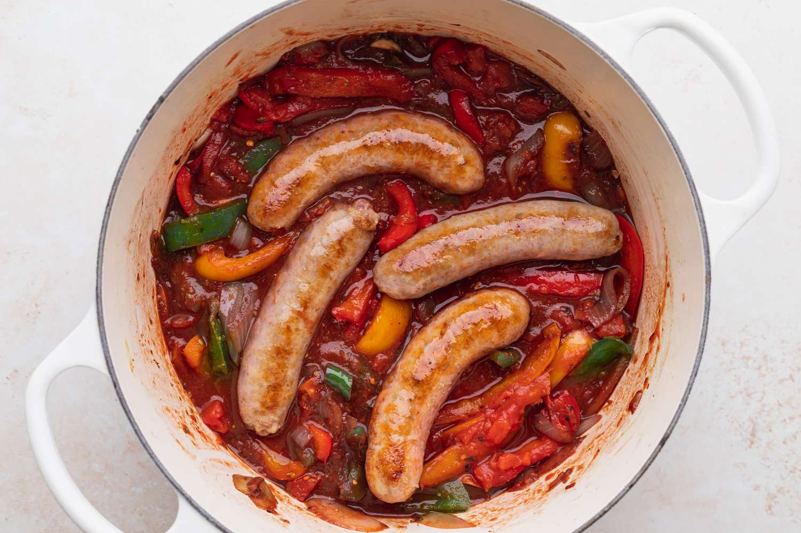

World's Best Lasagna

Description
This simple and delicious one-pan sausage and peppers recipe has been used in our family for years and years now. Serve in a roll, or use as a topping for pizza or pasta. For an extra kick, try using 1/2 sweet Italian sausage and 1/2 hot sausage!
Ingredients
- Italian Sausage: Sweet Italian sausage is perfect for this top-rated recipe. To turn up the heat a bit, try using half hot Italian sausage.
- Butter: Two tablespoons of butter is all you'll need to sauté the veggies. Of course, you could substitute olive oil if you prefer.
- Onions: Slice one yellow onion and half of one red onion. If you prefer a milder flavor, just use one and a half yellow onions.
- Garlic: Mince four cloves of fresh garlic to add to the vegetable mixture for authentic Italian flavor.
- Bell Peppers: Slice one red pepper and one green bell pepper.
- Spices and Seasonings: This sausage and peppers recipe is simply seasoned with dried basil and dried oregano.
- Wine: Opt for a dry white wine such as pinot grigio or sauvignon blanc. If you don't have any wine on hand, reviewers say they've had success substituting with chicken broth or beer.
Ingredients
- Bring a large pot of lightly salted water to a boil. Cook spaghetti in the boiling water, stirring occasionally until tender yet firm to the bite, about 12 minutes. Drain.
- Heat a skillet over medium heat; cook and stir guanciale until crisp, 5 to 10 minutes.
- Whisk egg yolks and egg together in a bowl; add Pecorino-Romano cheese, salt, and pepper and whisk well. Stir in guanciale. Add spaghetti and toss until evenly coated.